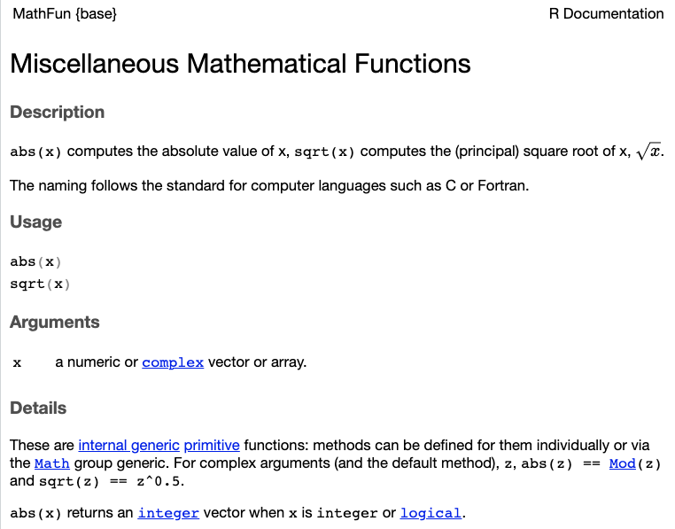
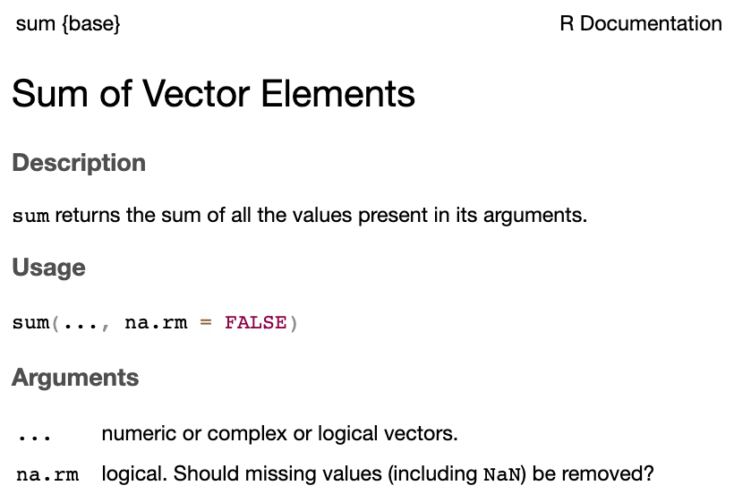
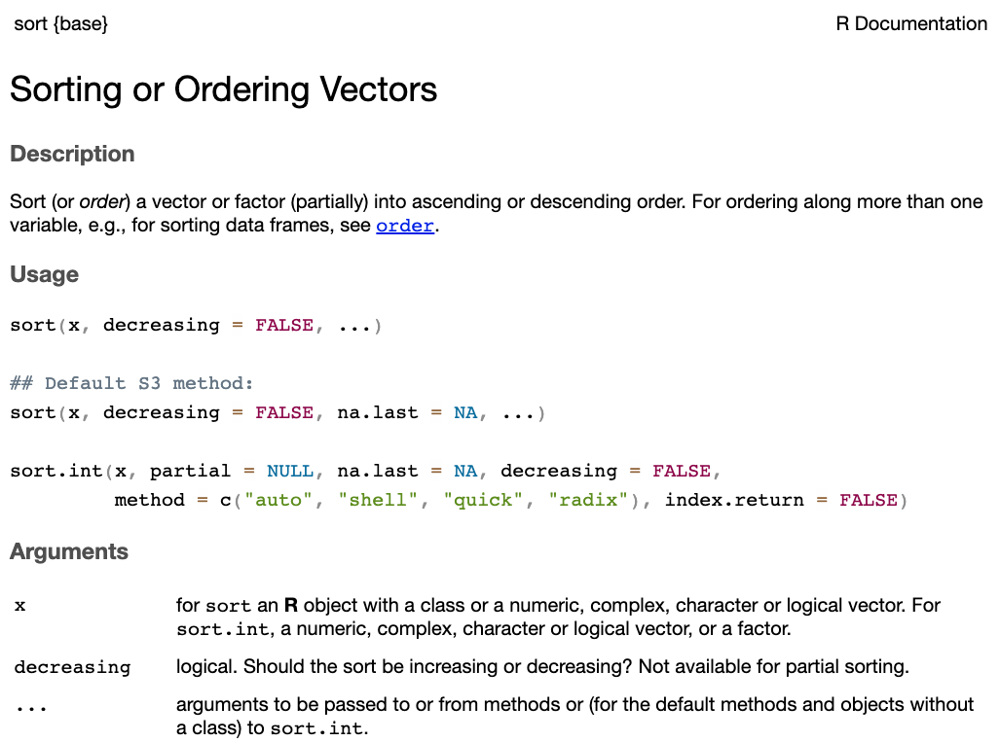

[1] 2Fundamentos de R
Roger M. López
R como calculadora
En esta sección se sientan las bases para entender el lenguaje, al menos en la forma en que R ejecuta las órdenes para realizar cálculos matemáticos.
Operaciones básicas I
En primer lugar, R puede funcionar como una calculadora básica, realizando las operaciones más comunes como:
Sumar
Operaciones básicas II
El lenguaje también permite realizar operaciones más complejas como:
Potenciación
Operaciones básicas III
Finalmente, las reglas básicas de aritmética se aplican en R:
Asignación de variables
La idea de objeto se repetirá bastante y es, en parte, definitoria en el lenguaje que estamos utilizando. Si bien el concepto es más profundo y complejo, por el momento, podemos decir que un objeto es una entidad en la cual se coloca información a la cual se puede acceder y reutilizar luego.
Mi primera variable
Supongamos que queremos guardar el resultado de la operación 1 + 1 en una variable llamada x. (¿Por qué querríamos hacerlo?)
A diferencia de los ejemplos anteriores, no hubo un resultado en la consola. Sin embargo, si escribimos x y ejecutamos la celda:
Esto ocurre porque R ha almacenado correctamente el resultado de la operación en la variable x.
Mi segunda variable
No es necesario que el nombre de la variable sea x, podemos utilizar cualquier otro nombre. Por ejemplo, si quisiéramos guardar el resultado de la operación 1 + 3 en una variable llamada suma, podríamos hacerlo:
Ya tendríamos dos variables, x y suma, que contienen el mismo valor. Esto se muestra en el Global Environment.
Advertencia
Se recomienda utilizar nombres cortos y descriptivos, evitando espacios y puntos entre palabras. Por ejemplo, el objeto mi_objeto es más recomendable que mi.objeto o mi objeto.
Antes de seguir: asignar
Para asignar variables, R utiliza el símbolo <-, que se lee como “asignar”. Sin embargo, también se puede utilizar el símbolo =. Por ejemplo:
Ambas líneas de código son equivalentes, pero se recomienda utilizar <- para asignar variables, ya que es la convención en el lenguaje y evitará confusiones con otras funciones que utilizan el símbolo =.
Antes de seguir: mayúsculas y minúsculas
Otra cosa a tener en cuenta es que R es sensible a mayúsculas y minúsculas. Por lo tanto, mi_variable y Mi_variable son dos objetos diferentes. Por ejemplo, si definimos la primera como:
Pero nos referimos a ella como Mi_variable, R no la reconocerá:
El lenguaje, sin embargo, nos devolverá un Error si intentamos acceder a un objeto que no existe.
Utilizando variables
Las variables que hemos creado (x y suma) pueden ser utilizadas para cálculos posteriores. Recordando sus valores:
Adicionalmente, es posible modificar el valor de una variable. Por ejemplo, si quisiéramos cambiar el valor de x a 10, podríamos hacerlo. Actualmente x es:
Nota
Las variables se almacenan en el Global Environment. Si se desea, se pueden eliminar utilizando utilizando la función rm(). Por ejemplo, para eliminar la variable x, se ejecutaría rm(x).
Tipos de datos
Hasta ahora hemos trabajado con números enteros. Sin embargo, R permite trabajar con diferentes tipos de datos. A continuación se presentan los tipos de datos más comunes:
- Números enteros:
1,2,3, etc. - Números decimales:
1.5,2.3,3.14, etc. - Texto:
"Hola","Mundo","Hola mundo", etc. - Lógicos:
TRUE,FALSE. - NA:
NA(Not Available), utilizado para representar datos faltantes.
Conforme se avance en el curso, se irán introduciendo estos tipos en el análisis.
Palabras reservadas
Existe un conjunto de palabras reservadas que no deben ser utilizadas como nombres de objetos, pues son utilizadas internamente por el lenguaje:
if |
else |
repeat |
while |
function |
for |
in |
next |
break |
TRUE |
FALSE |
NULL |
Inf |
NaN |
NA |
NA_integer_ |
NA_real_ |
NA_complex_ |
NA_character_ |
Vectores
Los vectores son una de las estructuras de datos más importantes en R. Un vector es una colección de elementos del mismo tipo. Por ejemplo, un vector puede contener números, texto o valores lógicos. Otra forma de verlo, es imaginar el vector como una columna de una tabla, donde cada fila representa un elemento del vector.
Para crear un vector, se utiliza la función c(), que significa “concatenar”.
Mi primer vector
Para entender los vectores, imaginemos que tenemos la siguiente tabla de datos:
| Id | Vendedor | Ventas (Bs) |
|---|---|---|
| 1 | Juan | 500 |
| 2 | María | 700 |
| 3 | Miguel | 400 |
| 4 | Pedro | 200 |
| 5 | Ana | 1000 |
Por ejemplo, supongamos que queremos expresar las ventas en cientos de bolivianos:
Podemos ver que R ha realizado la operación para cada elemento del vector.
Nota
Los vectores pueden ser utilizados para realizar operaciones matemáticas, por ejemplo, es posible calcular el producto interno entre dos vectores. Esto no será cubierto en este curso.
Operaciones con vectores
Al igual que con las variables, los vectores pueden ser utilizados para realizar operaciones matemáticas. Por ejemplo, supongamos que tenemos la siguiente tabla de datos:
| Id | Vendedor | Ventas - Semana 1 (Bs) | Ventas - Semana 2 (Bs) |
|---|---|---|---|
| 1 | Juan | 500 | 700 |
| 2 | María | 700 | 800 |
| 3 | Miguel | 400 | 600 |
| 4 | Pedro | 200 | 300 |
| 5 | Ana | 1000 | 1200 |
Operaciones con vectores
Otra cosa que nos puede interesar, es obtener el total de ventas de cada vendedor sumando las ventas de la semana 1 y la semana 2.
| Id | Vendedor | Ventas - S1 | Ventas - S2 | Total |
|---|---|---|---|---|
| 1 | Juan | 500 | 700 | 1200 |
| 2 | María | 700 | 800 | 1500 |
| 3 | Miguel | 400 | 600 | 1000 |
| 4 | Pedro | 200 | 300 | 500 |
| 5 | Ana | 1000 | 1200 | 2200 |
Podemos calcular el total de ventas de cada vendedor sumando los dos vectores:
Podemos ver que R ha realizado la operación para cada uno de los elementos de cada vector.
Extracción de elementos
A veces, es necesario extraer elementos específicos de un vector. Para ello, recordemos la tabla de ventas:
| Id | Vendedor | Ventas (Bs) |
|---|---|---|
| 1 | Juan | 500 |
| 2 | María | 700 |
| 3 | Miguel | 400 |
| 4 | Pedro | 200 |
| 5 | Ana | 1000 |
Para extraer elementos específicos se utilizan los índices. Los índices son números que indican la posición de un elemento en el vector, tal como aparecen en la columna Id.
Extracción de elementos
A veces, es necesario extraer elementos específicos de un vector. Para ello, recordemos la tabla de ventas:
| Id | Vendedor | Ventas (Bs) |
|---|---|---|
| 1 | Juan | 500 |
| 2 | María | 700 |
| 3 | Miguel | 400 |
| 4 | Pedro | 200 |
| 5 | Ana | 1000 |
Para extraer elementos específicos se utilizan los índices. Los índices son números que indican la posición de un elemento en el vector, tal como aparecen en la columna Id.
Extracción de elementos
A veces, es necesario extraer elementos específicos de un vector. Para ello, recordemos la tabla de ventas:
| Id | Vendedor | Ventas (Bs) |
|---|---|---|
| 1 | Juan | 500 |
| 2 | María | 700 |
| 3 | Miguel | 400 |
| 4 | Pedro | 200 |
| 5 | Ana | 1000 |
Para extraer elementos específicos se utilizan los índices. Los índices son números que indican la posición de un elemento en el vector, tal como aparecen en la columna Id.
También podemos utilizar la notación i:n para escribir números consecutivos, donde i es el primer número de una secuencia y n es el último:
Funciones: una introducción
Se pueden pensar una función como una relación entre variables. Por ejemplo, en el lenguaje cotidiano se suele decir “dependiendo del tráfico voy a llegar en aproximadamente 15 minutos”. Implícitamente se describe una relación entre la variable tráfico y la variable hora de llegada. Matemáticamente lo expresaríamos como \(\textit{hora de llegada} = \mathcal{f}(tráfico)\)
Funciones I
Las funciones son una de las características más poderosas de los lenguajes de programación. Permiten realizar cálculos complejos de manera sencilla y reutilizable.
Concretamente, la función sqrt() toma el argumento x, que puede ser un número o un vector. Esto se puede verificar utilizando la ayuda en R:

Funciones II: suma
Existen muchas funciones en R, para ilustrar algunas, recordemos nuestra tabla de ventas:
| Id | Vendedor | Ventas (Bs) |
|---|---|---|
| 1 | Juan | 500 |
| 2 | María | 700 |
| 3 | Miguel | 400 |
| 4 | Pedro | 200 |
| 5 | Ana | 1000 |
Funciones II: suma con NA
Existen muchas funciones en R, para ilustrar algunas, recordemos nuestra tabla de ventas:
| Id | Vendedor | Ventas (Bs) |
|---|---|---|
| 1 | Juan | 500 |
| 2 | María | 700 |
| 3 | Miguel | 400 |
| 4 | Pedro | 200 |
| 5 | Ana | NA |
Supongamos que queremos calcular la suma de las ventas. Para ello se utiliza la función sum():
¿Qué pasó?
Verifiquemos la ayuda de la función sum():

Funciones II: suma con NA
Existen muchas funciones en R, para ilustrar algunas, recordemos nuestra tabla de ventas:
| Id | Vendedor | Ventas (Bs) |
|---|---|---|
| 1 | Juan | 500 |
| 2 | María | 700 |
| 3 | Miguel | 400 |
| 4 | Pedro | 200 |
| 5 | Ana | NA |
Funciones II: promedio
Existen muchas funciones en R, para ilustrar algunas, recordemos nuestra tabla de ventas:
| Id | Vendedor | Ventas (Bs) |
|---|---|---|
| 1 | Juan | 500 |
| 2 | María | 700 |
| 3 | Miguel | 400 |
| 4 | Pedro | 200 |
| 5 | Ana | 1000 |
Funciones II: ordenar
Existen muchas funciones en R, para ilustrar algunas, recordemos nuestra tabla de ventas:
| Id | Vendedor | Ventas (Bs) |
|---|---|---|
| 1 | Juan | 500 |
| 2 | María | 700 |
| 3 | Miguel | 400 |
| 4 | Pedro | 200 |
| 5 | Ana | 1000 |
Supongamos que queremos ordenar de mayor a menor las ventas. Para ello se utiliza la función sort():
¿Qué pasó?
Verifiquemos la ayuda de la función sort():

Funciones II: ordenar
Existen muchas funciones en R, para ilustrar algunas, recordemos nuestra tabla de ventas:
| Id | Vendedor | Ventas (Bs) |
|---|---|---|
| 1 | Juan | 500 |
| 2 | María | 700 |
| 3 | Miguel | 400 |
| 4 | Pedro | 200 |
| 5 | Ana | 1000 |
Funciones: wrap-up
Las funciones son una de las características más poderosas de R. Permiten realizar cálculos complejos de manera sencilla y reutilizable.
Existen muchas funciones en R, cada una con su propia sintaxis y argumentos.
En la medida que uno las necesite, una simple búsqueda en Google (o ChatGPT) puede ayudar a encontrar la función que se necesita.
| Función | Definición |
|---|---|
length() |
Devuelve el número de elementos del vector. |
sort() |
Ordena el vector en un determinado orden |
log() |
Devuelve el logaritmo de cada elemento del vector |
mean() |
Toma el promedio aritmético del vector |
median() |
Toma la mediana del vector |
sd() |
Toma la desviación estándar del vector |
var() |
Toma la varianza del vector |
min() |
Devuelve el valor mínimo del vector |
max() |
Devuelve el valor máximo del vector |
sum() |
Devuelve la suma de los elementos del vector |
Dataframes
El dataframe es tal vez la estructura más importante para el análisis de datos y es suficientemente general como para permitirnos trabajar con distintos tipos de variables. Para los usuarios de MS Excel, es lo más parecido a una hoja/planilla de la herramienta.
Dataframe: una introducción
De forma general, un dataframe es una tabla donde cada columna representa una variable y cada fila representa una observación. Por ejemplo, si tenemos la siguiente tabla de datos:
| Id | Vendedor | Ventas (Bs) |
|---|---|---|
| 1 | Juan | 500 |
| 2 | María | 700 |
| 3 | Miguel | 400 |
| 4 | Pedro | 200 |
| 5 | Ana | 1000 |
Podemos representarlo como un dataframe en R de la siguiente manera:
Donde se utiliza la función data.frame() para crear el dataframe. Esta función toma como argumentos los nombres de las columnas y los vectores que la representan.
Dataframe: agregar columnas
Por ejemplo, si quisiéramos agregar una columna con el país de cada vendedor, podríamos hacerlo de la siguiente manera:
ventas <- data.frame(
Id = c(1, 2, 3, 4, 5),
Vendedor = c("Juan", "María", "Miguel", "Pedro", "Ana"),
Ventas = c(500, 700, 400, 200, 1000),
Pais = c("Bolivia", "Brasil", "Perú", "Bolivia", "Bolivia")
)
ventas Id Vendedor Ventas Pais
1 1 Juan 500 Bolivia
2 2 María 700 Brasil
3 3 Miguel 400 Perú
4 4 Pedro 200 Bolivia
5 5 Ana 1000 BoliviaComo podemos ver, se ha agregado una nueva columna llamada Pais al dataframe ventas. Cada elemento de la columna Pais corresponde a un vendedor.
Dataframe: agregar columnas
Es importante notar que los elementos de cada columna deben tener el mismo número de elementos. Por ejemplo, si quisiéramos agregar una columna con la categoría de cada vendedor, pero nos faltara la de Ana, R no podrá crear la columna porque no tiene el mismo número de elementos que las otras columnas:
ventas <- data.frame(
Id = c(1, 2, 3, 4, 5),
Vendedor = c("Juan", "María", "Miguel", "Pedro", "Ana"),
Ventas = c(500, 700, 400, 200, 1000),
Pais = c("Bolivia", "Brasil", "Perú", "Bolivia", "Bolivia"),
Categoria = c("A", "B", "C", "D")
)Error in data.frame(Id = c(1, 2, 3, 4, 5), Vendedor = c("Juan", "María", : arguments imply differing number of rows: 5, 4 Id Vendedor Ventas Pais
1 1 Juan 500 Bolivia
2 2 María 700 Brasil
3 3 Miguel 400 Perú
4 4 Pedro 200 Bolivia
5 5 Ana 1000 Bolivia¿Qué hacer en estos casos?
Dataframe: agregar columnas con NA
Si no se tiene el valor pero se desea agregar la columna, se puede utilizar el valor NA (Not Available) para indicar que el valor está ausente:
ventas <- data.frame(
Id = c(1, 2, 3, 4, 5),
Vendedor = c("Juan", "María", "Miguel", "Pedro", "Ana"),
Ventas = c(500, 700, 400, 200, 1000),
Pais = c("Bolivia", "Brasil", "Perú", "Bolivia", "Bolivia"),
Categoria = c("A", "B", "C", "D", NA)
)
ventas Id Vendedor Ventas Pais Categoria
1 1 Juan 500 Bolivia A
2 2 María 700 Brasil B
3 3 Miguel 400 Perú C
4 4 Pedro 200 Bolivia D
5 5 Ana 1000 Bolivia <NA>En este caso, se ha agregado una nueva columna llamada Categoria al dataframe ventas, pero el valor de la categoría de Ana es NA, lo que indica que no se tiene información sobre su categoría.
Dataframe: operaciones
- ¿Qué otro tipo de operaciones podemos realizar con un dataframe?
Por ejemplo:
- Extraer elementos del dataframe (filas, columnas o celdas)
- Seleccionar elementos que cumplan ciertas condiciones (filtrar)
- Adicionar observaciones (filas)
- Adicionar variables (columnas)
Nota
Regularmente no es necesario crear un dataframe desde 0, toda vez que es común tener la información en archivos de información, ya sean desde Microsoft Excel (.xlsx) o archivos “planos”, como ser los valores separados por coma (.csv) o los archivos de texto (.txt). También es posible importar información directamente desde bases de datos relacionales, como ser MySQL, PostgreSQL, SQLite, entre otros.
Dataframe: extracción de elementos
Para extraer elementos de un dataframe, se utilizan los índices. Concretamente, un dataframe tiene dos dimensiones: filas y columnas, que se pueden acceder especificando el índice de la fila, i y el índice de la columna, j, como dataframe[i, j].
| Id | Vendedor | Ventas (Bs) |
|---|---|---|
| 1 | Juan | 500 |
| 2 | María | 700 |
| 3 | Miguel | 400 |
| 4 | Pedro | 200 |
| 5 | Ana | 1000 |
Dataframe: extracción de elementos II
Sin embargo, no es necesario utilizar índices numéricos para extraer elementos, ya que también se pueden utilizar nombres de columnas y nombres de filas.
Por ejemplo, si quisiéramos extraer al primer Vendedor, podríamos hacerlo de la siguiente manera:
También podemos extraer la columna Vendedor completa:
Dataframe: filtro de datos numéricos
A veces, es necesario filtrar los datos de un dataframe para obtener solo aquellos que cumplen ciertas condiciones. Por ejemplo, si quisiéramos obtener solo las ventas mayores a 500 Bs, podríamos hacerlo de la siguiente manera:
Id Vendedor Ventas Pais Categoria
2 2 María 700 Brasil B
5 5 Ana 1000 Bolivia <NA>Esto nos devolverá un dataframe con las filas que cumplen la condición de que las ventas son mayores a 500 Bs.
Dataframe: filtro de datos de texto
A veces, es necesario filtrar los datos de un dataframe para obtener solo aquellos que cumplen ciertas condiciones. Por ejemplo, si quisiéramos obtener solo las ventas de los vendedores que son de Bolivia, podríamos hacerlo de la siguiente manera:
Id Vendedor Ventas Pais Categoria
1 1 Juan 500 Bolivia A
4 4 Pedro 200 Bolivia D
5 5 Ana 1000 Bolivia <NA>Nótese que se utiliza el operador == para comparar si el valor de la columna Pais es igual a “Bolivia”.
También se pueden combinar condiciones. Por ejemplo, si quisiéramos obtener solo las ventas mayores a 500 Bs y de los vendedores que son de Bolivia, podríamos hacerlo de la siguiente manera:
Conclusiones
- En su concepción más básica,
Rse asemeja a una calculadora, ya que permite realizar cálculos matemáticos simples y más complejos.
- Adicionalmente, el lenguaje nos permite definir objetos y, en particular, vectores, los cuales pueden ser entendidos como una colección de números que representan una categoría o atributo de un individuo (por ejemplo, las ventas de un conjunto de vendedores).
- Esto es interesante porque sobre se pueden aplicar funciones sobre los mismos y realizar cálculos más complejos.
- Finalmente,
Rpermite trabajar con dataframes, que son una estructura de datos que permite almacenar información en forma de tabla, donde cada columna representa una variable y cada fila representa una observación. Esto es especialmente útil para el análisis de datos, ya que permite realizar operaciones sobre los datos de manera sencilla y eficiente.